All year, Ted-E-Bear has dropped a folded note into a jar whenever something good happened. Tonight he plans to read the whole year out loud at the library party. Then the jar slips on the icy step, the notes scatter across the snow, and none of them has a date.
27 printed pages · 6.8 MB · A4 or US Letter. Download PDF · Open PDF to printOpens in a new tab. Use the PDF viewer's Print control.
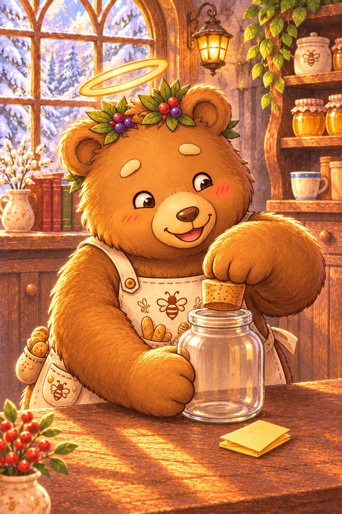
Page 1 of 26
On the first day of the year, Ted-E-Bear found an empty honey jar at the back of his cupboard. He washed it, dried it and pushed a cork into the top.
Then he wrote a note on a scrap of paper, folded it twice and dropped it in.
“There,” he said. “One good thing.”
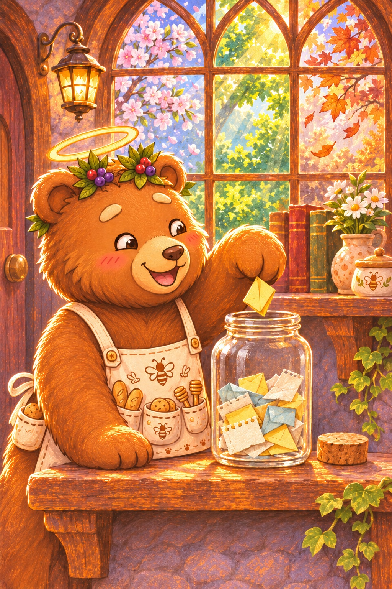
Page 2 of 26
After that, whenever something good happened, Ted wrote it down. Some notes were on yellow paper, some on blue and some on the backs of old shopping lists.
He never read them again. He just watched the jar fill up, a little at a time, like snow on a windowsill.
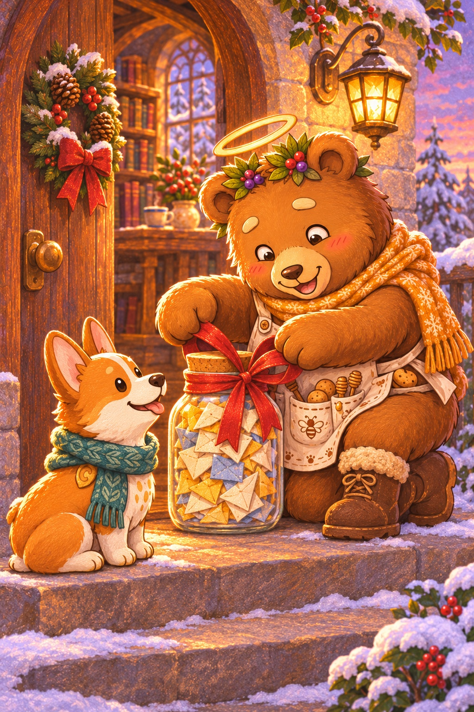
Page 3 of 26
Now it was the last day of the year. The jar was so full that the cork squeaked when Ted pushed it in.
Professor Hooten was having a New Year’s Eve party at the library, and Ted had a plan. He tied a red ribbon round the jar’s neck.
“I’m going to read the whole year out loud,” he told Corgi-on-the-Cob. “From the very first note to the very last.”
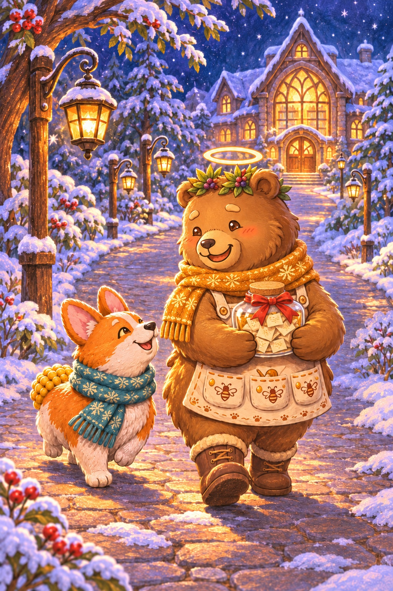
Page 4 of 26
Corgi trotted beside him all the way to the library, which was unusual. Corgi usually ran ahead.
“What if it’s boring?” said Ted. “A whole year is a lot of things.”
“It won’t be boring,” said Corgi. He sounded very sure about it.
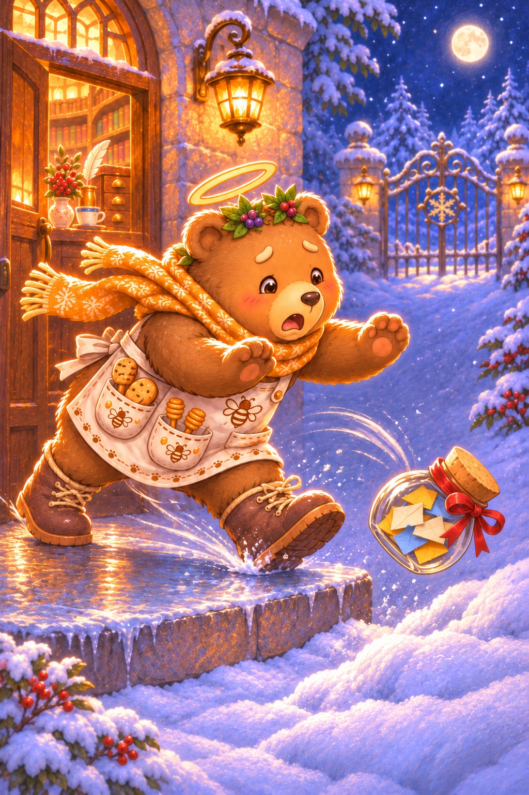
Page 5 of 26
The library had a separate stone step in front of the door. Tonight it wore a thin, shiny coat of ice.
Ted’s paws were cold. The jar was heavy. He stepped up, and his boot slid one way while the jar slid the other.
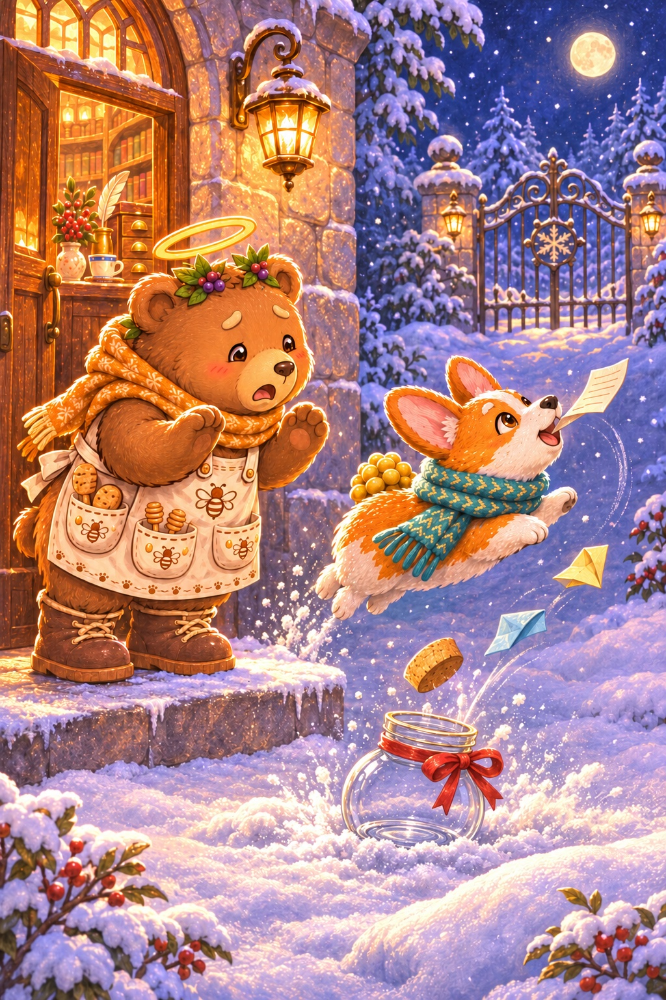
Page 6 of 26
The jar landed in a soft bank of snow and didn’t break. But the cork popped out, and the notes flew everywhere, like a flock of small paper birds.
Some landed on the step. Some landed in the snow. One blew all the way to the gate before Corgi caught it in his mouth.
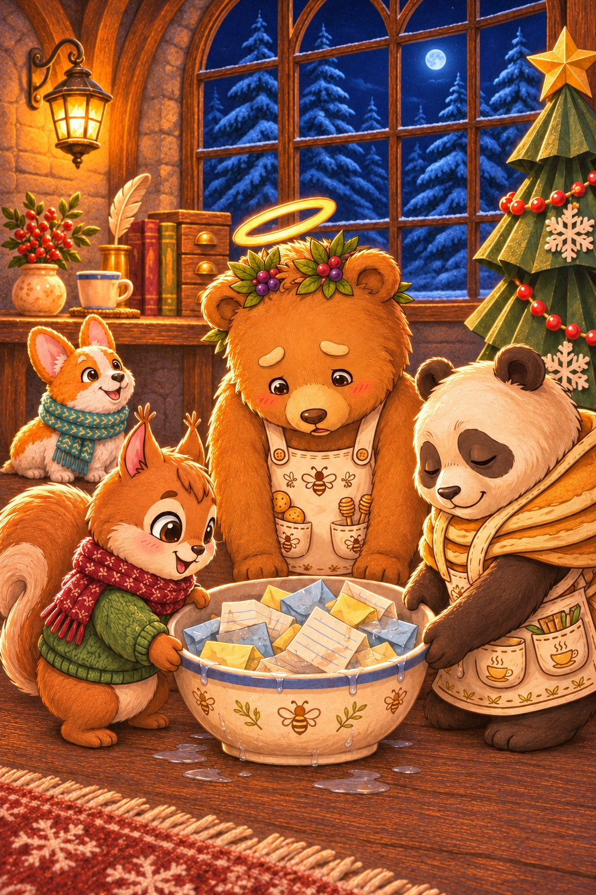
Page 7 of 26
Nutmeg and Panda-Cake came running out to help. They gathered every note they could find and carried them inside in a mixing bowl.
Ted looked into the bowl. His whole year was in there, all jumbled up.
“I never wrote the dates,” he said quietly. “Now I can’t read them in order.”
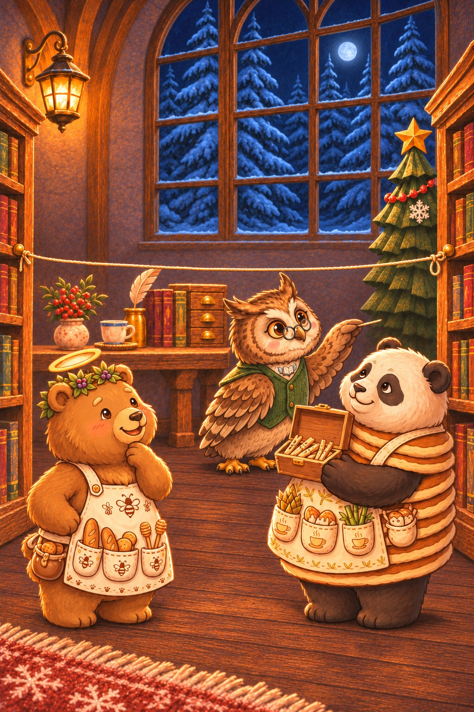
Page 8 of 26
“Then we’ll put them back in order,” said Professor Hooten. “We’ll be detectives. Every note will have a clue.”
He fetched a long piece of string and tied it between two bookcases. Then he gave Panda-Cake a box of wooden pegs.
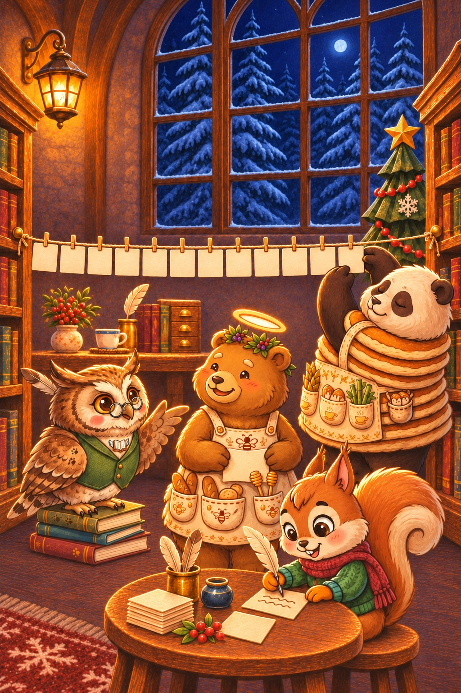
Page 9 of 26
Nutmeg cut out twelve paper squares and wrote a month on each one: January, February, March, all the way to December. Panda-Cake pegged them along the string, one month after another.
“Now,” said Hooten. “Read us a note, Ted. Then tell us where it goes.”
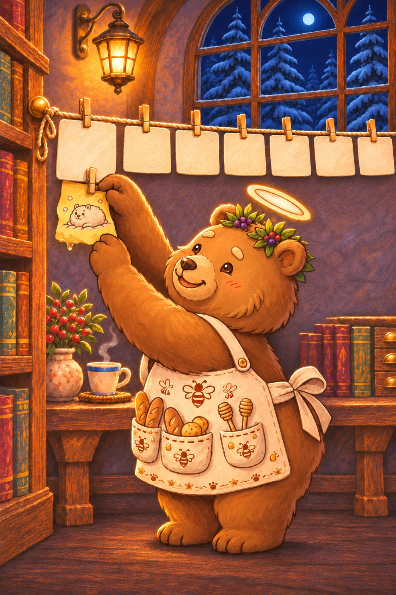
Page 10 of 26
Ted unfolded the first one. It was slightly damp.
Corgi and I built a snow bear. It looked more like a loaf.
“Snow,” said Nutmeg. “So it’s winter. That could be January or February.”
“Or December,” said Panda-Cake.
“It was the very first note in the jar,” said Ted slowly. “I remember the loaf.” He pegged it under January.
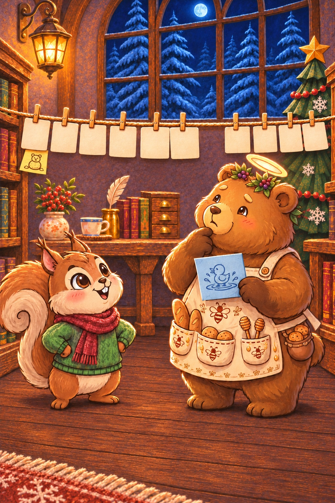
Page 11 of 26
The next note was on blue paper.
It rained on our picnic, so we had a puddle party instead. A duckling came.
“Ducklings hatch in spring,” said Nutmeg. “April, maybe. Or May.”
Ted pegged it under April. Then he moved it to May. Then he moved it back to April, because that was when the big puddles were.
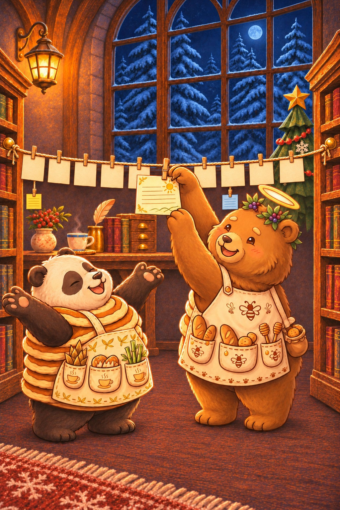
Page 12 of 26
I read the whole welcome card out loud at the picnic. Corgi helped me with the first sounds.
“That was the summer picnic on the cliff,” said Panda-Cake. “The day it was so hot the jam melted.”
Ted pegged it under July. He was beginning to enjoy this.
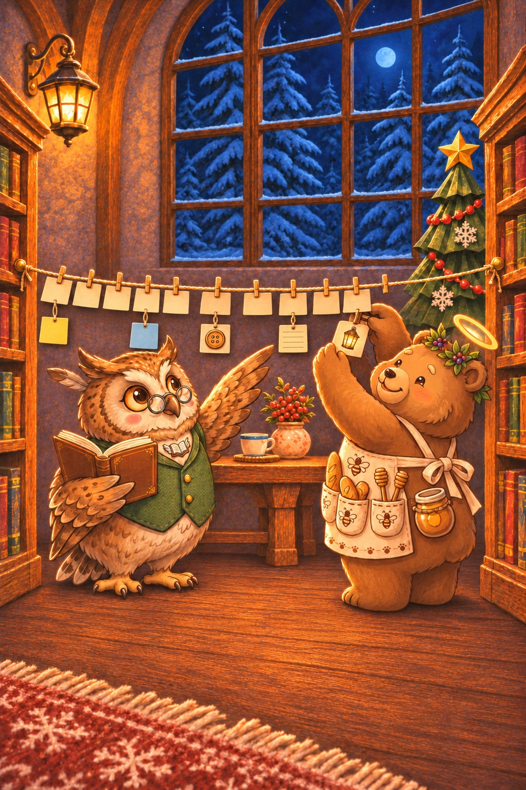
Page 13 of 26
Eight lanterns. Two dark paths. Everyone got home.
“The lantern walk,” said Hooten. “It gets dark early in autumn. That was October.”
Found the missing button. It was under the bench all along.
Nobody could remember when that one happened. Not even Ted. They pegged it in the middle of the year and decided that was good enough.
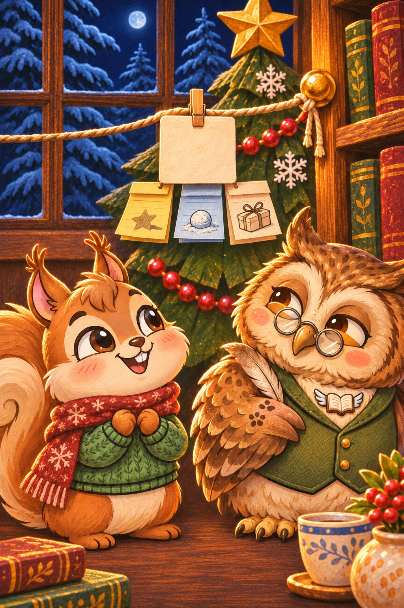
Page 14 of 26
There were three December notes: a shadow show, a snowball truce and a parcel under the tree on Christmas morning.
“December is getting crowded,” said Nutmeg.
“December is always crowded,” said Hooten.
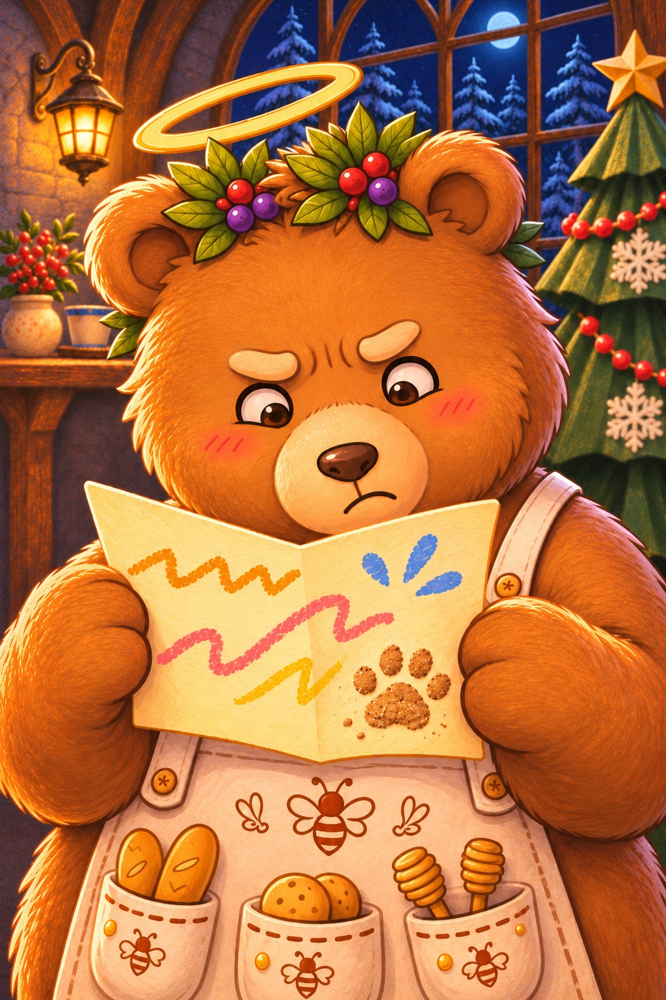
Page 15 of 26
Ted picked up the next note. The writing was big and wobbly, and at the bottom there was a sandy paw print.
At the sledging hill, Ted pulled my sled back up every time. Even when his legs were tired.
Ted frowned. “I didn’t write this one.”
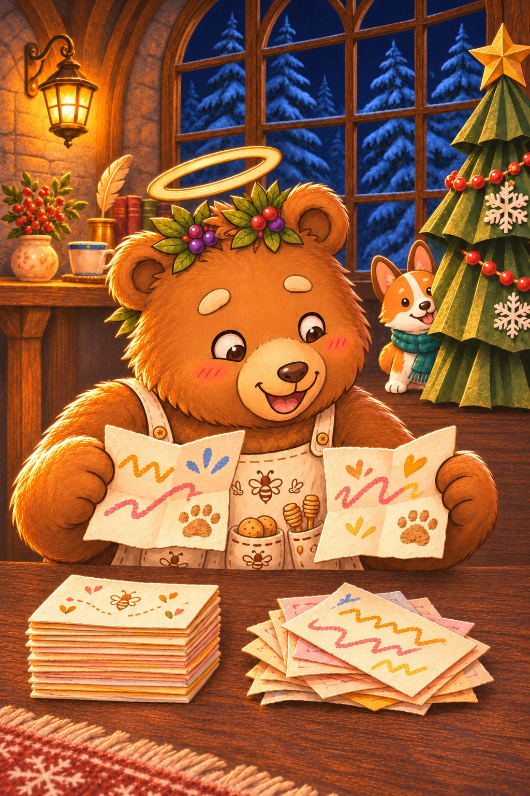
Page 16 of 26
He unfolded another. Same wobbly writing. Same paw print.
Ted carried the last parcel all the way across the hall to Moss, who had only just moved here.
And another.
It rained all afternoon, so Ted made his blanket fort big enough for Panda-Cake too. Even though it was only a small blanket.
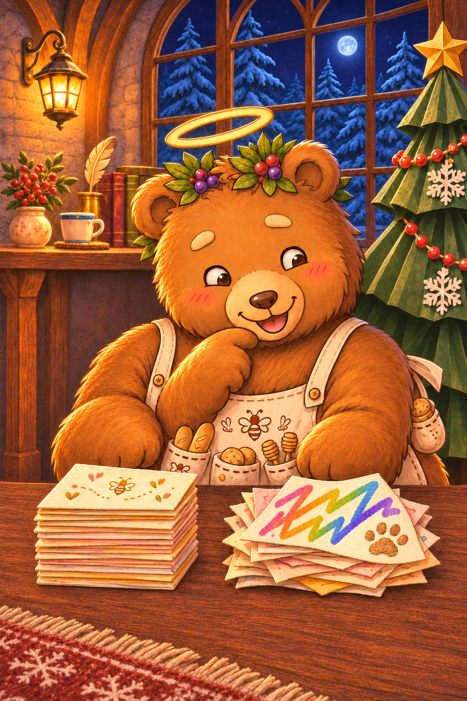
Page 17 of 26
Ted sorted the bowl into two piles. His own neat notes went on one side. The wobbly notes went on the other.
The wobbly pile was nearly as big as his.
“These aren’t things that happened to me,” said Ted. “They’re things I did.”
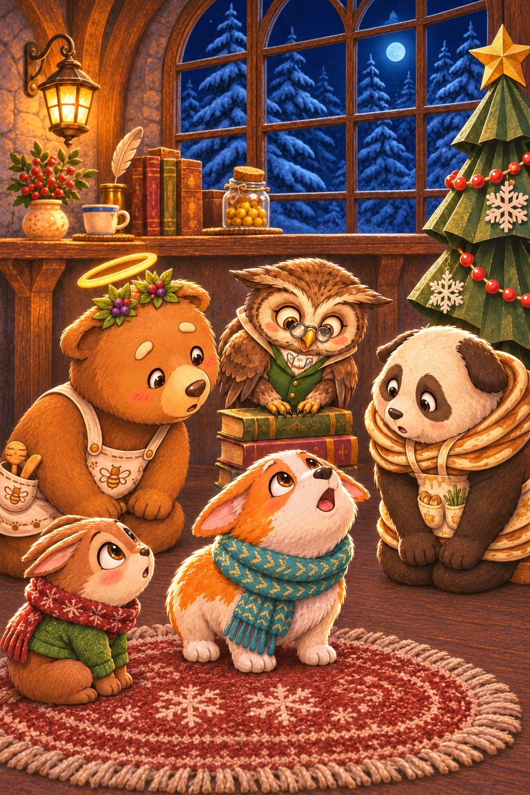
Page 18 of 26
Everyone turned to look at Corgi.
Corgi looked at the ceiling. Then at the floor. Then at the ceiling again.
“You left the jar on the shelf by your door,” he said at last. “And the cork isn’t very tight.”
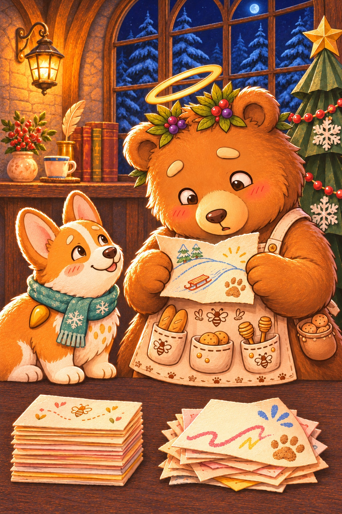
Page 19 of 26
“You put these in?” asked Ted. “All year?”
“Only when you weren’t looking,” said Corgi. “You only wrote the good things that happened to you. Nobody was writing down the good things you did.”
Ted didn’t say anything for a moment. He held the wobbly note about the sledging hill very carefully, as if it might fly away again.
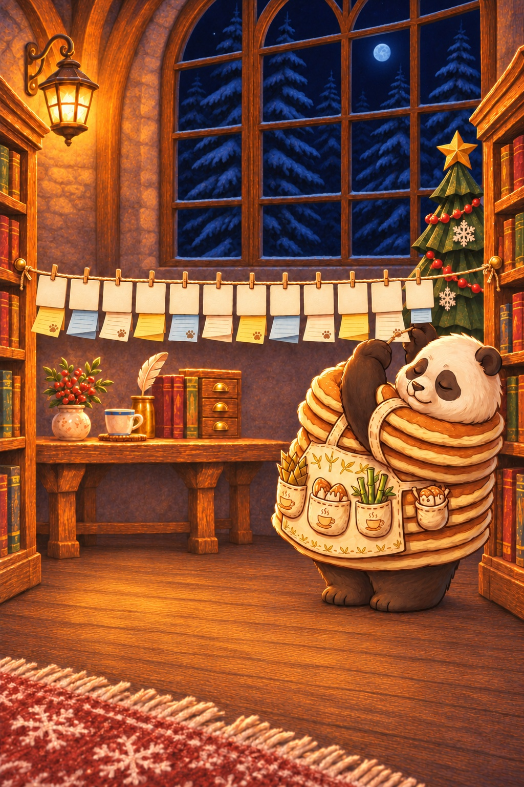
Page 20 of 26
“Where do Corgi’s notes go?” asked Panda-Cake.
That part was easy. Sledging meant snow, so that was winter. The last parcel was Christmas morning. The rainy blanket fort was spring.
Soon the string was full, from January to December. Blue notes, yellow notes and wobbly notes with paw prints, all mixed together.
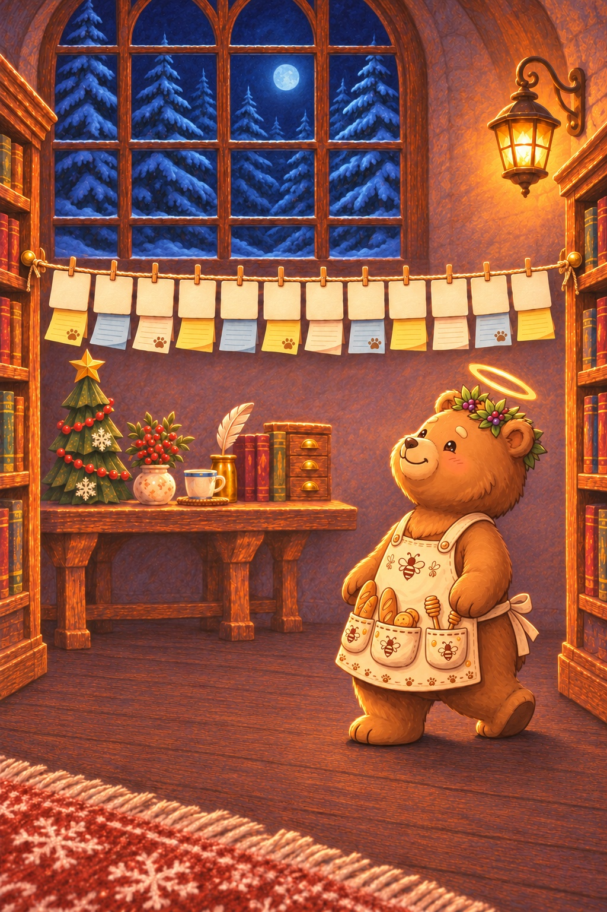
Page 21 of 26
Ted stepped back and looked at it.
It was a much longer year than he remembered. And there was much more of him in it.
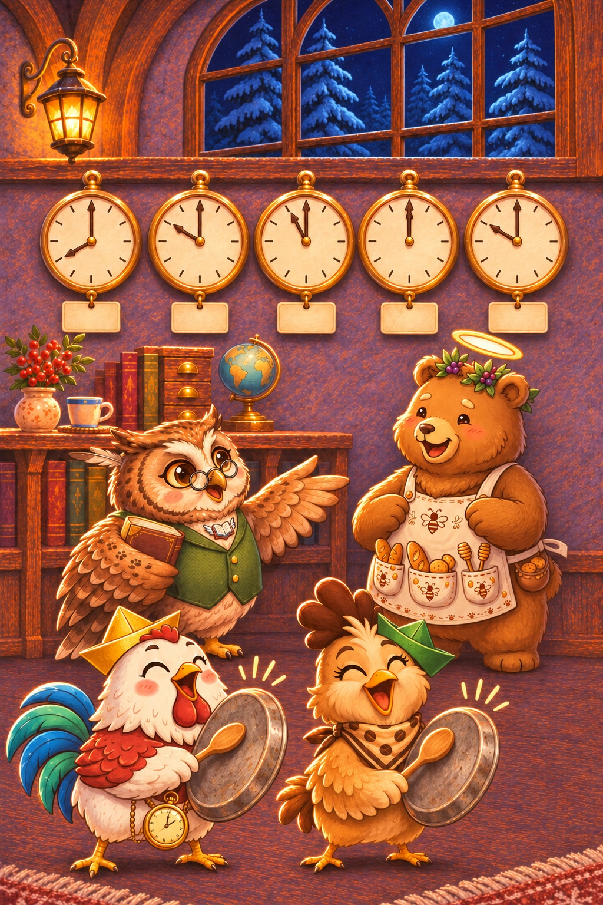
Page 22 of 26
Across the room, Professor Hooten’s wall of clocks showed eight o’clock. In one far-away city, it was midnight already.
Cluck O’Clock and Coop-Accino banged their pot lids. “Not yet, not yet… NOW!” everybody shouted. “Happy New Year, Dubai!”
“Now it’s your turn, Ted,” said Hooten.
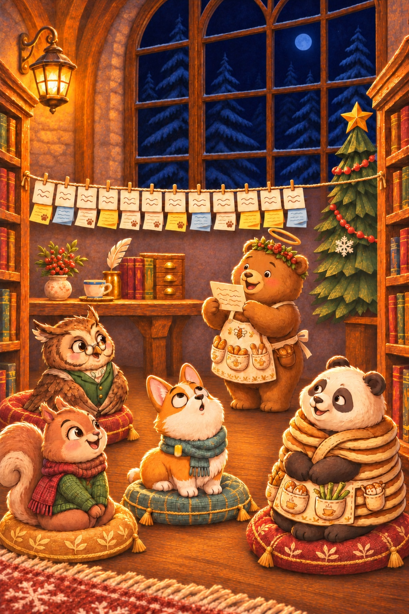
Page 23 of 26
So Ted read the year out loud, one note at a time, from January all the way to December.
When he read a neat note, everyone smiled. When he read a wobbly one, everyone looked at Corgi, and Corgi looked at the ceiling.
It wasn’t boring at all.
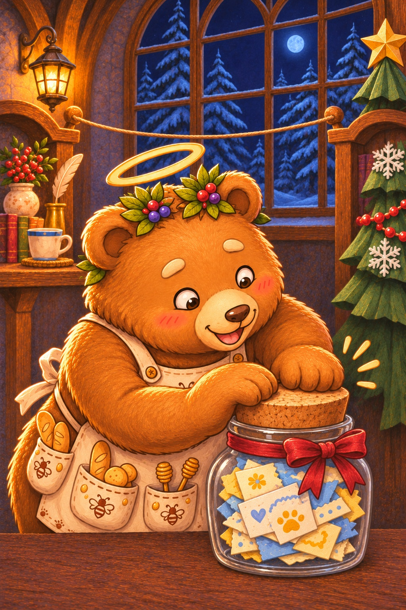
Page 24 of 26
At the end, Ted took the notes off the string and put every one of them back in the honey jar. This time he pushed the cork in tightly.
Then he looked at the empty string.
“Next year needs a jar too,” he said. “A jar each.”
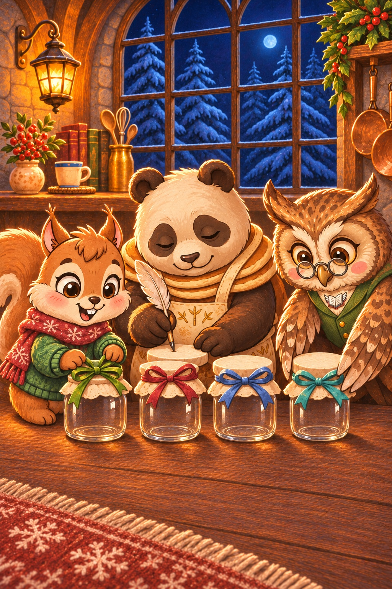
Page 25 of 26
Hooten found four more jars in the library kitchen. One for Nutmeg. One for Panda-Cake. One for himself. And one for Corgi.
Nutmeg tied a ribbon round each one, and Panda-Cake wrote their names on the lids.
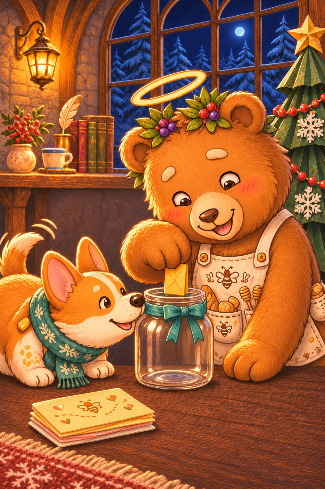
Page 26 of 26
Ted tore a scrap of paper from his yellow notebook. He wrote something on it, folded it twice and dropped it into Corgi’s empty jar.
“What does it say?” asked Corgi.
“You’ll find out next New Year’s Eve,” said Ted.
It was the first good thing of the year. And it wasn’t even nine o’clock.
The end · Thank you for reading
Share another story
A SnackPack original story, free to read online or print.